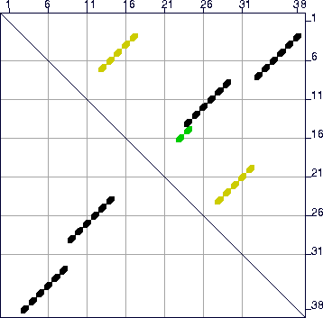
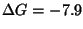
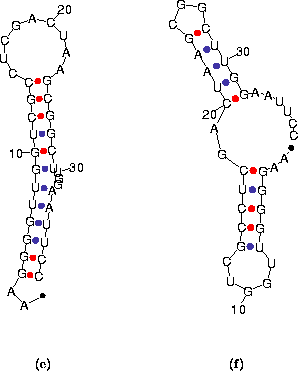

Next: EXAMPLE 3
Up: Sample foldings
Previous: EXAMPLE 1
Important alternative foldings might not appear in the energy dot plot if
 is too small. This is especially true in the folding of short
sequences. When the short sequence:
is too small. This is especially true in the folding of short
sequences. When the short sequence:
AAGGGGUUGG UCGCCUCGAC
UAAGCGGCUU GGAAUUCC,
is folded, also with default parameters, a
single optimal folding is computed. However, the energy dot plot contains only
the optimal, black dots from Figure 15. Changing the window
size would not reveal anything new. When the value of P is increased
to 25 (25%), the energy dot plot now reveals a very distinct alternate folding
as shown in Figure 15. The mfold program now computes 2
foldings, plotted in Figure 16, using the default value of W.
Figure 15:
The energy dot plot for ``Example 2'' sequence with
increased to 25%
of 10.1, or 2.5 kcal/mole. The value of
in the plot may be less
than this maximum value, since there may be no base pairs in foldings
that are exactly
from the minimum free energy. The 2
green dots represent base pairs that can be in foldings with  between -9.4 and -8.6 kcal/mole. These numbers are -8.6 and -7.9 for
the yellow dots. In this case, the black dots comprise the optimal
folding, and the yellow dots comprise the single suboptimal folding
that is computed. The green dots would only be found in a folding if
the value of W were lowered sufficiently.
between -9.4 and -8.6 kcal/mole. These numbers are -8.6 and -7.9 for
the yellow dots. In this case, the black dots comprise the optimal
folding, and the yellow dots comprise the single suboptimal folding
that is computed. The green dots would only be found in a folding if
the value of W were lowered sufficiently.
|  |
Figure 16:
The 2 predicted foldings for the ``Example 2''
sequence. (a) The optimal folding with
kcal/mole. (b) The suboptimal fold (

kcal/mole)
found after refolding with `P'=25.
|  |
Next: EXAMPLE 3
Up: Sample foldings
Previous: EXAMPLE 1
 | Michael Zuker
Institute for Biomedical Computing
Washington University in St. Louis
1998-12-05 |